Tire comparison
Comparison between tire models: linear, polinomial e Pacejka 1989.
Contents
Description
O modelo de pneu relaciona a for�a lateral com o �ngulo de deriva (�ngulo formado entre o vetor velocidade do centro do pneu com o plano longitudinal do pneu). The typical relation between these two variables can be observed in the figure below (Adapted from [1]). Besides, its possible to verify the definition of slip angle.

Equival�ncia
Supondo um modelo de pneu Pacejka 1989 de refer�ncia � poss�vel obter um modelo linear e polinomial equivalente. Isto � feito igualando o coeficiente de rigidez lateral dos tr�s modelos e igualando a for�a lateral m�xima dos modelos polinomial e Pacejka 1989.
The model Pacejka 1989 depends on the parameters 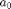, 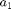, 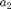, 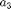, 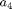, 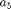, 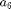 e 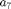 that defines the constants 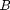, 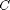, 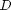 e 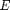 wich can be used to define the constants of the equivalent models.
O modelo linear equivalente possui cornering stiffness 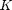 dado por:
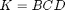
O modelo polinomial equivalente possui coeficientes 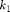 e 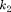 dados por:

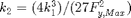
Onde  � a for�a lateral m�xima da curva caracter�stica de refer�ncia.
� a for�a lateral m�xima da curva caracter�stica de refer�ncia.
Model comparison
% Code start clear all % Clear workspace close all % Closing figures clc % Clear command window import DinamicaVeicular.* % Importando o pacote Dinamica Veicular deriva = (0:0.1:15)*pi/180; % �ngulo de deriva [rad] % Pneu Pacejka de refer�ncia Fz = 4e+03; camber = 0; a0 = 1.3; a1 = 2.014156; a2 = 710.5013; a3 = 5226.341; a4 = 78.87699; a5 = 0.01078379; a6 = -0.004759443; a7 = -1.8572; a8 = 0; a9 = 0; a10 = 0; a11 = 0; a12= 0; a13 = 0; pPac = DinamicaVeicular.PneuPacejka1989([a0 a1 a2 a3 a4 a5 a6 a7 a8 a9 a10 a11 a12 a13]); muy0 = a1*Fz/1000 + a2; D = muy0*Fz/1000; BCD = a3*sin(2*atan(Fz/1000/a4))*(1-a5*abs(camber)); % Pneu linear equivalente K = BCD*180/pi; pLin = DinamicaVeicular.PneuLinear(K); % Pneu polinomial equivalente k1 = BCD*180/pi; k2 = (4*k1^3)/(27*D^2); pPol = DinamicaVeicular.PneuPolinomial([k1 k2]); % Lateral force FyPac = pPac.Characteristic(deriva,Fz,muy0/1000); FyLin = pLin.Characteristic(deriva); FyPol = pPol.Characteristic(deriva); % Graphics g = DinamicaVeicular.Graficos; figure(1) ax = gca; set(ax,'NextPlot','add','Box','on','XGrid','on','YGrid','on') p = plot(deriva*180/pi,-FyLin,'Color','g','Marker','s','MarkerFaceColor','g','MarkeredgeColor','k','MarkerSize',7); g.changeMarker(p,10); p = plot(deriva*180/pi,-FyPol,'Color','b','Marker','^','MarkerFaceColor','b','MarkeredgeColor','k','MarkerSize',7); g.changeMarker(p,10); p = plot(deriva*180/pi,-FyPac,'Color','r','Marker','o','MarkerFaceColor','r','MarkeredgeColor','k','MarkerSize',7); g.changeMarker(p,10); xlabel('$\alpha$ [grau]','Interpreter','Latex') ylabel('$F_y$ [N]','Interpreter','Latex') l = legend('Linear','Polinomial','Pacejka'); set(l,'Interpreter','Latex','Location','NorthWest')
Undefined variable "DinamicaVeicular" or class "DinamicaVeicular.PneuPacejka1989". Error in TireComparison (line 57) pPac = DinamicaVeicular.PneuPacejka1989([a0 a1 a2 a3 a4 a5 a6 a7 a8 a9 a10 a11 a12 a13]);
Na figura acima � poss�vel observar a curva caracter�stica dos tr�s modelos com propriedades equivalentes. Para pequenos �ngulos de deriva os tr�s modelos se comportam de maneira semelhante. For slip angles around 8 degrees (Angle with the maximal lateral force) the linear model presents large errors. Para �ngulos maiores que 8 graus o modelo polinomial come�a a n�o acompanhar a curva gerada pelo modelo Pacejka 1989.
Comparison treatment slip angle
deriva180 = (0:0.1:180)*pi/180; % �ngulo de deriva de 0 � 180 graus [rad] % Sem tratamento ALPHA = deriva180*180/pi; C = a0; muy = muy0; E = a6*Fz/1000 + a7; B = BCD/(C*D); Sh = a8*camber + a9*Fz/1000 + a10; Sv = a11*Fz/1000*camber + a12*Fz/1000 + a13; ALPHAeq = muy0/muy*(ALPHA + Sh); % Reference characteristics fy = D*sin(C*atan(B*ALPHAeq - E*(B*ALPHAeq - atan(B*ALPHAeq)))); % Lateral force FyPacSem180 = -muy/muy0*(fy + Sv); % Com tratamento FyPacCom180 = pPac.Characteristic(deriva180,Fz,muy0/1000); figure(2) ax = gca; set(ax,'NextPlot','add','Box','on','XGrid','on','YGrid','on') p = plot(deriva180*180/pi,-FyPacSem180,'Color','m','Marker','d','MarkerFaceColor','m','MarkeredgeColor','k','MarkerSize',7); g.changeMarker(p,10); p = plot(deriva180*180/pi,-FyPacCom180,'Color','r','Marker','o','MarkerFaceColor','r','MarkeredgeColor','k','MarkerSize',7); g.changeMarker(p,10); plot([90 90],[0 3000],'--k') % Linha vertical de simetria xlabel('$\alpha$ [grau]','Interpreter','Latex') ylabel('$F_y$ [N]','Interpreter','Latex') l = legend('Pacejka sem tratamento','Pacejka com tratamento'); set(l,'Interpreter','Latex','Location','SouthEast')
Na figura acima � poss�vel observar o efeito do tratamento do �ngulo de deriva na curva caracter�stica. The curve is symmetric to a vertical line positioned at 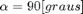.
References
[1] GILLESPIE, T. D. Fundamentals of vehicle dynamics. [S.l.]: Society of Automotive Engineers Warrendale, PA, 1992.